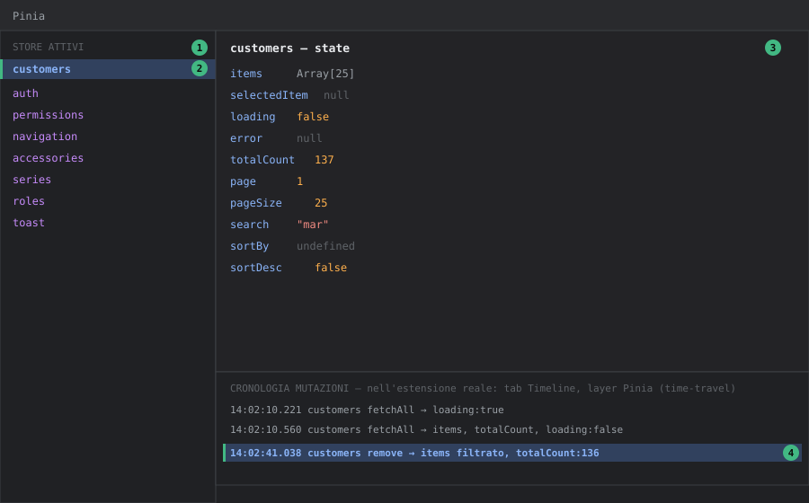

DevTools — Pannello Pinia
Livello 1 — Base
Il pannello Pinia elenca tutti gli store attivi nell'app (uno per riga, col nome passato a defineStore('id', ...)) e per ciascuno mostra lo state corrente in tempo reale, come un albero JSON navigabile.
Su Tama ogni dominio dati ha il proprio store in stores/*.store.ts, tutti scritti in setup syntax (defineStore('customers', () => { ... return {...} }), vedi stores/customers.store.ts). Nel pannello Pinia questo significa che compaiono solo i valori effettivamente restituiti nel return finale dello store — non tutto ciò che è dichiarato dentro la funzione. Se un ref interno non viene esposto nel return, non sarà visibile in DevTools, anche se esiste nel codice.
Come aprirlo: tab Vue → sotto-tab Pinia. Cliccando su uno store (es. customers) si vede il suo state: items, selectedItem, loading, error, totalCount, page, pageSize, search, sortBy, sortDesc (tutti i campi esposti da customers.store.ts).

Come leggere il pannello (mockup illustrativo con dati di esempio Tama):
① Elenco store attivi, a sinistra: uno per ogni defineStore(...) montato — su Tama ce ne sono oltre 15 (customers, auth, permissions, ecc.).
② Store selezionato (evidenziato): il suo state completo compare nel riquadro a destra.
③ Albero dello state: solo i valori restituiti nel return {...} dello store setup-syntax compaiono qui — un ref interno non esposto non sarà visibile, anche se esiste nel codice.
④ Cronologia mutazioni (time-travel): ogni riga è una mutazione con timestamp; cliccandola si può "tornare indietro" allo state di quel momento (vedi Livello 3). Nota: nell'estensione reale questa cronologia non è dentro il tab Pinia ma nel layer Pinia del tab Timeline — nel mockup è mostrata accorpata solo per compattezza.
Livello 2 — Intermedio
Workflow tipico: una lista non si aggiorna dopo una create/update e non è chiaro se è un problema di store o di UI.
Ogni store lista di Tama (customers.store.ts, accessories.store.ts, ecc.) segue lo stesso pattern CRUD: fetchAll() popola items/totalCount, create()/update() richiamano il servizio e poi ri-eseguono fetchAll(), mentre remove() filtra l'array locale senza un nuovo fetch (items.value = items.value.filter(x => x.id !== id), vedi customers.store.ts righe 61-65). Con il pannello Pinia aperto sullo store giusto durante l'azione:
- Se
loadingrestatruedopo l'operazione → l'errore è neltry/finallydel metodo (es. un'eccezione non gestita prima delfinally). - Se
itemsnon cambia affatto dopo unacreate→ il problema è a monte, nella chiamata HTTP (verificare con il tab Network del browser, non DevTools Vue) o nel service layer, non nello store. - Se
errorsi popola con il messaggio i18n (i18n.global.t('errors.loadCustomers')) ma la UI non lo mostra → il problema è nel componente che leggestore.error, non nello store stesso.
Questa distinzione — stato dello store corretto ma UI che non lo riflette vs stato dello store già sbagliato — è la prima domanda da porsi in ogni bug di dati su Tama, e il pannello Pinia è il modo più rapido per rispondere.
Editing diretto dello state: come nel pannello Components, ogni valore è modificabile al volo con l'icona matita. Esempio pratico: forzare customersStore.error = 'test' per verificare che il componente lista mostri correttamente il banner d'errore, senza dover disconnettere davvero il backend.
Esempio guidato: capire perché la lista clienti è vuota
Scenario: si apre /data/customers e la tabella è vuota, nessun errore visibile.
- Pannello Pinia → store
customers. Guardare tre campi nell'ordine:loading— se è ancoratrue, la richiesta non è mai terminata (backend lento o bloccato: su Render free tier il cold start può superare i 30s, vediserver-wake.store.tsche mostra il banner apposito).error— se è valorizzato, la fetch è fallita ma la UI potrebbe non mostrare il messaggio: bug di visualizzazione, non di dati.items+totalCount— seitemsè[]matotalCountè0, il backend ha risposto correttamente "nessun risultato".
- Nel terzo caso, controllare
search: un filtro di ricerca dimenticato (es."mar"rimasto da una sessione precedente) restituisce legittimamente zero righe. È il classico bug "non è un bug". - Per confermare, svuotare
searchcon l'editing live (matita → stringa vuota): sewatchDebouncedinCustomersPage.vueè attivo, dopo ~300ms parte automaticamentefetchAll()e la tabella si ripopola — visibile in diretta nel pannello (loading: true → false,itemsche si riempie).
Livello 3 — Avanzato
Time-travel debugging: ogni azione e mutazione Pinia viene registrata come evento nel layer Pinia del tab Timeline (vedi devtools-timeline). Selezionando un evento passato, il riquadro laterale mostra lo state in quel momento; è possibile "tornare indietro" per ispezionare come si è arrivati a uno stato inconsistente, senza dover riprodurre da capo l'intera sequenza di click.
Utile in particolare per lo store auth.store.ts, che gestisce sia lo state reattivo sia una copia persistita in localStorage (token, permissions, ecc., vedi _setSession/_clearSession). Se dopo un refresh token (refresh() in auth.store.ts) i permessi in UI risultano disallineati, il time-travel permette di isolare esattamente la mutazione che ha aggiornato permissions.value e confrontarla con il payload ricevuto dal backend in quel momento (incrociando con il tab Network).
Store multipli con nomi simili: attenzione a non confondere store correlati ma distinti, es. auth.store.ts (sessione utente) e permissions.store.ts (anagrafica dei permessi disponibili nel sistema, usata nelle pagine system/roles/system/permissions) — nel pannello Pinia compaiono come voci separate (auth, permissions) e leggere l'una pensando di leggere l'altra è un errore comune quando si debugga l'autorizzazione.
Store setup-syntax senza defineStore "options": poiché nessuno store di Tama usa la sintassi a oggetto (state/getters/actions), non esistono "getters" nel senso classico Pinia da cercare in un riquadro separato — i valori computati (es. isAuthenticated in auth.store.ts, un computed) compaiono mescolati nello stesso albero dello state, contrassegnati come computed. Sapere questo evita di cercare una sezione "Getters" che nel pannello, per questi store, semplicemente non esiste.
Invocare le azioni di uno store dalla console: il pannello Pinia permette di editare lo state, ma non ha un bottone per eseguire le azioni. Per invocare fetchAll/remove senza passare dalla UI si usa la console del browser, recuperando lo store dall'istanza Pinia dell'app:
// nella console del browser, con l'app in dev
const pinia = document.querySelector('#app').__vue_app__.config.globalProperties.$pinia
const customers = pinia._s.get('customers') // _s = Map id → store (API interna)
await customers.remove('64f0a1c2...') // testa l'azione isolata dalla UI
_s è un'API interna non documentata (può cambiare tra versioni di Pinia), ma in una sessione di debug locale è il modo più rapido per testare un'azione isolandola da eventuali problemi nel bottone/dialog che normalmente la richiama. L'esecuzione comparirà regolarmente come evento nel layer Pinia della Timeline, come se fosse partita dalla UI.